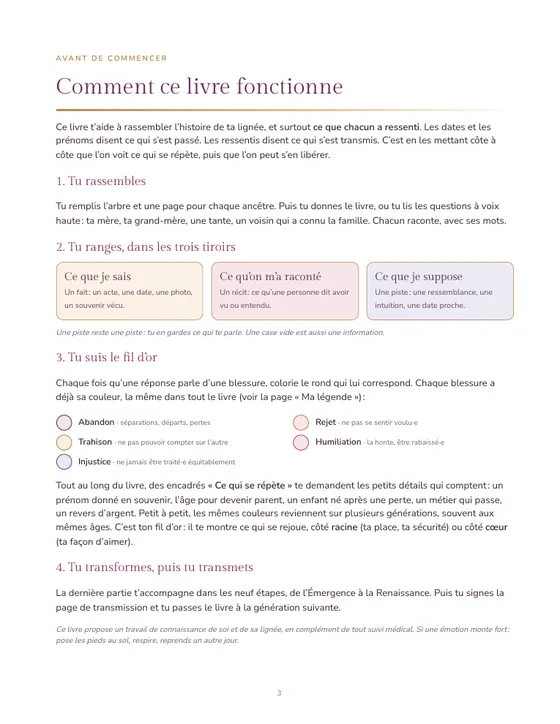
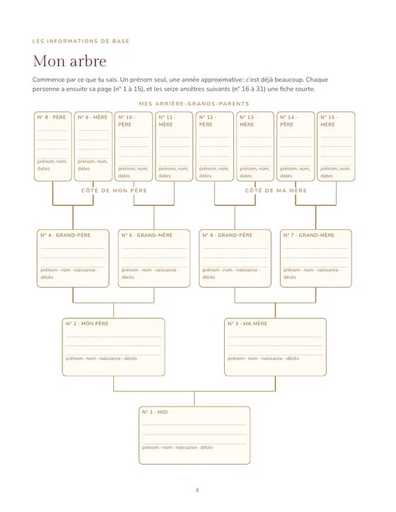
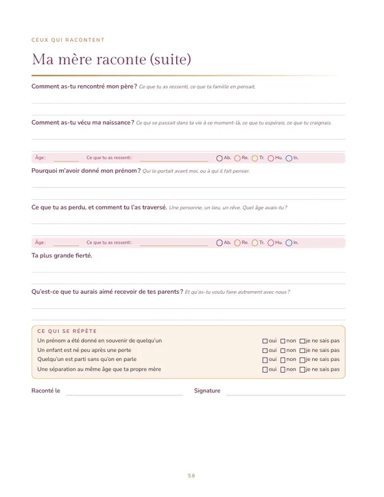
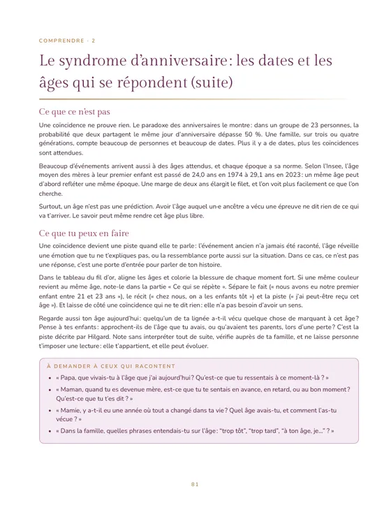

Le livre · à remplir en famille
L’enquête de ma lignée
Le carnet guidé pour comprendre ce que tu portes et choisir ta vie.
- Ton arbre sur cinq générations, une page pour chaque personne
- Des entretiens guidés pour recueillir les souvenirs et le ressenti de chacun : ta mère, ta grand-mère, une tante…
- 18 thèmes expliqués : syndrome d’anniversaire, secrets de famille, loyautés invisibles, prénoms transmis…
- Le fil d’or, pour voir ce qui se répète dans ta lignée et choisir ce que tu gardes
166 pages tout en couleur · grand format 21,6 × 27,9 cm · à écrire · Éditions Genesolia

Un livre qu’on remplit à plusieurs
Chacun y raconte ce qu’il a vécu, et surtout ce qu’il a ressenti. Puis on relie les fils.
Ton arbre, une page par personne, les photos, les lieux, les traditions, les dates.
Les entretiens : « Maman, qu’as-tu ressenti quand… ». Des questions qui ouvrent, à poser avec douceur.
18 thèmes expliqués simplement, chacun avec son exercice.
Relier, colorier, voir ce qui se rejoue d’une génération à l’autre.
Les neuf étapes, les lettres, ton arbre de vie.
À qui tu confies ce livre, pour que l’histoire continue.
Feuillette quelques pages
Les 18 premières pages sont offertes en PDF : télécharge-les et commence ton enquête dès ce soir.




Les 18 thèmes expliqués
- La mémoire transgénérationnelle
- Le syndrome d’anniversaire
- Les deuils non faits et les morts jeunes
- L’enfant de remplacement
- Le projet-sens : l’enfant attendu
- Le jumeau perdu
- Les secrets de famille et les non-dits
- Les loyautés invisibles
- Le prénom transmis
- La place dans la fratrie
- Les ancêtres communs (l’implexe)
- La guerre, l’exil et la mémoire de la famille
- L’argent : faillites, héritages, peur de manquer
- Les métiers transmis
- Les schémas en amour
- Les cinq blessures de l’âme
- Les rêves qui reviennent
- Honorer ses ancêtres
Un cadeau qui se transmet
À offrir à ta mère, à ta grand-mère, à toute la famille : un livre qu’on remplit ensemble, puis qu’on confie à la génération suivante.
Ce livre propose une lecture symbolique de l’histoire familiale et une aide à la réflexion. Il ne remplace pas l’avis d’un·e professionnel·le de santé.